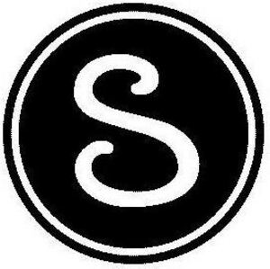

Trade Mark Journal No.2025/047 21 November 2025
WO0000001243940 (1,4,6,7,8,9,11,17,20,35,37,39,40,41,42)
Office of origin: United States of America
Date of International Registration:18 July 2014
Date of designation in the UK:
30 September 2025

The mark consists of three concentric circles with the letter "S" in the center.
- Class 1
- Chemical compound for detecting leaks in gas and fluid lines; chemical compound which will not freeze at low temperatures for detecting leaks in gas and fluid lines.
- Class 4
- Lubricant oils for glass seals and for titanium, stainless steel, steel, and alloy fitting threads, o-rings and gaskets.
- Class 6
- Manually operated metal valves for tubes, pipes and hoses; metal valves not being parts of machines; metal glands, ferrules and nuts for tubes, pipes and hoses; metal straight, elbow, tee and cross fittings for tubes, pipes and hoses; metal vacuum fittings for tubes, pipes and hoses; metal couplings for tubes, pipes and hoses; metal reducer fittings for tubes, pipes and hoses; metal adapter fittings for tubes, pipes and hoses; metal port connector fittings for tubes, pipes and hoses; metal quick disconnect fittings for tube, pipe and hose end connections; metal tubing; flexible metal tubing and hose; metal convoluted tubing; metal pipes used for gas distribution; metal seals for tubes, pipes and hoses; metal clamps for tubes, pipes and hoses; metal caps for tubes, pipes and hoses; metal plugs for tubes, pipes and hoses; metal compressed gas cylinders sold empty for use with hydraulic and pneumatic systems; metal cylinders for fluids sold empty; metal thermowells; metal manifolds for use with hydraulic and pneumatic systems.
- Class 7
- Electrically-powered machines and electrically-powered tools for cutting, bending, deburring, and swaging tube and hose; electric tube bender machine; electric arc welding machines for use with welding cooling plates, weld head bench mounting brackets attached to work benches, weld held fixture tool, welding collets for tubes, pipes and fittings; valves as machine components; pressure transducers as parts of machines; pneumatic valve actuators; regulators being parts of machines; gas and liquid filters being parts of machines; welding electrodes; control valves for regulating the flow of gases and liquids.
- Class 8
- Hand-operated tools for cutting, sawing, bending, deburring and swaging tube and hose; wrenches.
- Class 9
- Welding apparatus, namely, remote pendant controls, weld head centering gauges, weld arc gap gauges; pressure gauges for gas and fluid; fittings gap inspection apparatus; electrical transducer; electric or electronic sensors for sensing flow of fluid; pressure transducers and transmitters that convert hydraulic or pneumatic pressure into analog electrical signals for monitoring and controlling hydraulic or pneumatic systems; electric valve actuators; pressure relief valves for fluid systems; thermometers; flowmeters; calibration devices for calibrating fluid systems.
- Class 11
- Pressure regulators for gas installations.
- Class 17
- Pipe joint sealant; sealant compounds for joints; non-metal gaskets for fluid systems; non-metal, plastic and rubber hoses for industrial applications; plastic pipe and flexible pipe not of metal; plastic glands and ferrules for plastic tubes, flexible pipes and non-metal hoses; all the aforesaid goods for research, instrumentation, pharmaceutical, oil and gas, power generation, chemical, petrochemical, sanitary and semiconductor industry purposes; non-metallic flexible pipes and hose fittings; flexible tubes of plastic and plugs therefor; metal gaskets for tubes, pipes and hoses; non-metal pipe couplings and joints; non-metal tubing and tubing couplings for joining and terminating pipes.
- Class 20
- Plastic valves being other than machine parts; plastic nuts.
- Class 35
- Logistics management, marketing, inventory control, and customer services management for others in the fields of biopharmaceutical, food, beverage, dairy, oil and gas, power generation, chemical, petrochemical, shipbuilding, pulp and paper, and semi-conductor technologies; business management consultancy; business organization consultancy; business management assistance; business information; procurement, namely, purchasing of fluid systems equipment for others used in the process of analytical instrumentation, biopharmaceutical, food, beverage, dairy, oil and gas, power generation, chemical, petrochemical, shipbuilding, pulp and paper, and semi-conductor industries.
- Class 37
- Rental of equipment, namely, weld systems, tube benders, and other equipment, namely, tube flaring tools, gap inspection gauges, depth marking tools and tube cutters for the support of fluid systems technologies used in the process and analytical instrumentation, biopharmaceutical, food, beverage, dairy, oil and gas, power generation, chemical, petrochemical, shipbuilding, pulp and paper, and semi-conductor industries.
- Class 39
- Shipping and delivery services, namely, pickup and transportation, and delivery of goods used in the process and analytical instrumentation, biopharmaceutical, food, beverage, dairy, oil and gas, power generation, chemical, petrochemical, shipbuilding, pulp and paper, and semi-conductor industries by various modes of transportation.
- Class 40
- Treatment of metal goods used in the process and analytical instrumentation, biopharmaceutical, food, beverage, dairy, oil and gas, power generation, chemical, petrochemical, shipbuilding, pulp and paper, and semi-conductor industries; assembly of fluid systems for others.
- Class 41
- Educational training services, namely, conducting classes and providing electronic and on-site training in the field of fluid system technologies equipment for goods used in the process and analytical instrumentation, biopharmaceutical, food, beverage, dairy, oil and gas, power generation, chemical, petrochemical, shipbuilding, pulp and paper, and semi-conductor industries, and distributing course materials in connection therewith.
- Class 42
- Testing, analysis and evaluation of the goods of others for the purpose of certification, engineering consultancy, chemistry consultancy, in the fields of process and analytical instrumentation, biopharmaceutical, food, beverage, dairy, oil and gas, power generation, chemical, petrochemical, shipbuilding, pulp and paper, and semi-conductor technologies; quality control; technical support services, namely, troubleshooting of computer software problems.
Swagelok Company
Representative: Brittany L. Kulwicki, Calfee, Halter & Griswold LLP, 1405 E. 6th Street, The Calfee Building, Cleveland OH 44114, UNITED STATES OF AMERICA